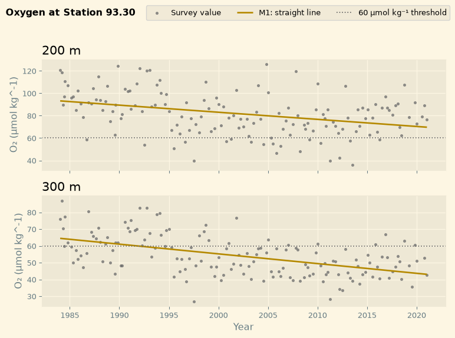
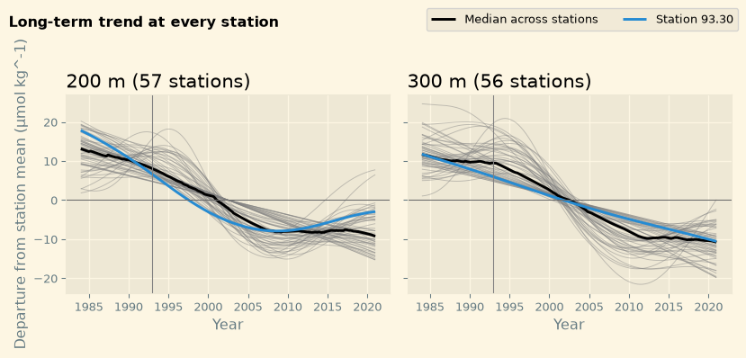

Below the surface layer off Southern California, at roughly 100 to 400 m, the ocean has been deoxygenating for decades. In the regional average of the California Cooperative Oceanic Fisheries Investigations (CalCOFI) survey, oxygen between 100 and 400 m fell by 0.97 ± 0.09 μM per year from 1993 to 2018 (Evans et al., 2020). Extrapolating that straight line, Evans et al. (2020) estimate that the 150-325 m layer will reach 60 μM, a standard low-oxygen threshold, in 2034. Fish and crustaceans are among the marine animals most sensitive to low oxygen, and a falling oxygen concentration shrinks the depth range in which these animals can live.
A projected date like 2034 is only as reliable as the trend beneath it is, and only as honest as the uncertainty of that trend. The standard way to measure oxygen trends in this region is a least-squares straight line fitted at each station or to a regional average (Bograd et al., 2015; Evans et al., 2020). that approach makes the assumptions that oxygen changes at a constant rate, each survey is an independent measurement, and strong seasonal and year-to-year swings can be treated as random noise.
This project asks: Once the seasonal cycle and year-toyear swings are modeled explicitly, how fast is subsurface oxygen falling across the CalCOFI grid, and how sure can we be of the results?
I answer it at two fixed depths, 200 and 300 m, from 1984 to 2021, at every CalCOFI station whose record is long enough to support the models. I compare three models of increasing flexibility: a straight line, a straight line with a seasonal cycle, and a Gaussian process that separates a bending long-term trend from the seasons cycle, year-to-year variability, and measurement noise (Rasmussen & Williams, 2006). Each model is judged on two criteria: how well it predicts whole years of data it has never seen, and whether its stated uncertainty is honest.
2 Background & Context
Ocean Deoxygenation and the California Undercurrent
Warming lowers oxygen’s solubility and strengthens stratification, leading to reduced oxygen to the ocean interior (Keeling et al., 2010). Off the coast of Southern California, the California Undercurrent flows northward along the continental slope, carrying warm, salty, oxygen-poor equatorial waters (Bograd et al., 2015; Evans et al., 2020). Station 93.30 sits in the core of the California Undercurrent, where Pacific Equatorial water amkes up 60-80% of the water at depths deeper than 100 m up to depths deeper than 400 m (Bograd et al., 2019). Evans et al. (2020) attribute 81% of the 1993-2018 deoxygenation to equatorial waters carried by the Undercurrent, finding that oxygen concentration in the region actually rose from 1984-1993 before beginning to decline. The source waters also vary from year to year. El Niño and La Niña change the equatorial contribution by about 10% (Bograd et al., 2019).
How Trend Have Been Measured
CalCOFI has sampled six lines off the coast of Southern California quarterly since 1984 (Bograd et al., 2015). Bograd et al. (2015) fitted straight lines at each station on two density surfaces from 1984-2012. Evans et al. (2020) averaged all station and depths between 100 and 400 m, noting that averaging like that would likely hide the effect of El Νiño, recommending the study of specific lines and stations instead.
Gaussian Process Regression
A Gaussian Process is a probability distribution over functions (Rasmussen & Williams, 2006). Instead of fixing the shape of the curve, it uses a kernel to identify how strongly values at two times are related and then conditions the data to give a mean curve with an uncertainty that increases when there’s a gap in the data. Kernels are additive, and so records that are the sum of multiple independent parts get a sum of kernels:
Here fL is the long-term trend, fS is the seasonal cycle, fI is the year-to-year variability, ε is the noise. The computation for each part auto-selects the settings by finding the values that best fit the data. After fitting, each part can be analyzed on its own so I can report the trend with its own uncertainty band, separate from seasonal and year-to-year swings. The trend I report is fL, and its uncertainty accounts for the other parts since they are modeled together. There is a limitation, which is that a flexible Gaussian Process Regresson can drift back towards its mean beyond the data, so it estimates trends within the record but shouldn’t be used for long projection.
3 Data
The data are the CalCOFI Bottle Database and contain measurement as recent as 2021. there is a cast table (one row per station visit, with date and position) and a bottle table (one row per water sample), linked by a cast identifier. Oxygen is measured via Winkler titration (Bograd et al., 2015). I use μmol kg^-1 throughout.
The full database has 895,371 bottle samples from 35,644 casts. For station 93.30 from 1984 onward, that leaves 5,390 bottle records from 179 casts. CalCOFI marks each record with a record indicator (RecInd: 3 = observed, 4 = office estimate, 5 = CTD sensor, 7 = interpolated to a standard depth) and each value with a quality code( O_qual: 6 = taken from the CTD sensor, 8 = suspect, 9 = missing). The table below counts the records left after each filter, applied in order.
Code
steps = [("All bottle records, Station 93.30, 1984–", btl)]obs = btl[btl.RecInd ==3]; steps.append(("Observed bottles only (RecInd 3)", obs))obs = obs[obs.O2.notna()]; steps.append(("Oxygen value present", obs))obs = obs[~obs.O_qual.isin([8, 9])]; steps.append(("Not flagged suspect or missing (O_qual 8, 9)", obs))obs_with_ctd = obs.copy()winkler = obs[obs.O_qual !=6]; steps.append(("Bottle (Winkler) oxygen only: drop O_qual 6", winkler))qc_table = pd.DataFrame([(name, len(d), d.Cst_Cnt.nunique()) for name, d in steps], columns=["Filter (cumulative)", "Bottle records", "Casts"])ctd_share = (obs.assign(yr=obs.date.dt.year, ctd=obs.O_qual ==6) .query("Depthm >= 150 and Depthm <= 350").groupby("yr").ctd.mean())Markdown(qc_table.to_markdown(index=False, disable_numparse=True))
Filter (cumulative)
Bottle records
Casts
All bottle records, Station 93.30, 1984–
5390
179
Observed bottles only (RecInd 3)
3432
179
Oxygen value present
3372
173
Not flagged suspect or missing (O_qual 8, 9)
3371
173
Bottle (Winkler) oxygen only: drop O_qual 6
3267
173
I keep only observed bottles, which removes CalCOFI’s own interpolations, as well as dropping suspect and missing values. I use bottle oxygen in order to eliminate bias from differences in oxygen measuring techniques as time passed since the method for measurement stayed consistent in the bottle database. The analysis section will show the effect of including the measurements from the CTD sensor.
Oxygen falls steeply with depth in this layer, so averaging all bottles between 200 and 300 m would cause changes in bottle depth to seem like a signal. Instead, I interpolate each cast to exactly 200 and 300 m, only accepting the value if the two bottles bracketing the target depth are at most 120 m apart, and I average casts from the same cruise. The unit of analysis is one survey per depth.
def design(t, seasonal): cols = [np.ones_like(t), t - T0]if seasonal: cols += [np.sin(2* np.pi * t), np.cos(2* np.pi * t)]return np.column_stack(cols)def fit_ols(t, y, seasonal): X = design(t, seasonal) beta, *_ = np.linalg.lstsq(X, y, rcond=None) resid = y - X @ beta dof =len(y) - X.shape[1] s2 = resid @ resid / dof XtXi = np.linalg.inv(X.T @ X)returndict(beta=beta, s2=s2, XtXi=XtXi, dof=dof, resid=resid, seasonal=seasonal, slope=beta[1], slope_se=np.sqrt(s2 * XtXi[1, 1]), n=len(y))series = {z: surv[surv.depth == z].sort_values("t") for z in TARGET_DEPTHS}fig, axs = plt.subplots(2, 1, figsize=(8, 6), sharex=True)for ax, z inzip(axs, TARGET_DEPTHS): d = series[z]; t, y = d.t.to_numpy(), d.O2.to_numpy() m1 = fit_ols(t, y, False) ax.scatter(t, y, s=14, color="dimgray", alpha=0.75, lw=0, label="Survey value") tt = np.array([t.min(), t.max()]) ax.plot(tt, design(tt, False) @ m1["beta"], color=M1_COLOR, label="M1: straight line") ax.axhline(HYPOXIA, color="dimgray", ls=":", lw=1.3) ax.set_title(f"{z} m", loc="left"); ax.set_ylabel(f"O₂ ({UNIT})")axs[1].set_xlabel("Year")h, l = axs[0].get_legend_handles_labels()fig.legend(h + [plt.Line2D([], [], color="dimgray", ls=":", lw=1.3)], l + ["60 μmol kg⁻¹ threshold"], loc="upper right", ncol=3, bbox_to_anchor=(1, 1.0))fig.suptitle("Oxygen at Station 93.30", x=0.01, ha="left", fontweight="bold")fig.tight_layout(rect=(0, 0, 1, 0.95)); plt.show()

The result is 150 surveys at each depth, from 1984 to 2021, with no long gaps (above). Mean oxygen is ~82 μmol kg^-1 at 200 m and ~54 at 300 m, a gradient of ~28 μmol kg^-1 per 100 m. At 300 m, the average over the record is already below the 60 μmol kg^-1 hypoxia threshold.
4 Ethical Challenges and How I Addressed Them
The data are public and involve no human subjects. The ethical challenges are in crediting the data, in making analytical choices, and in how results are communicated.
Crediting the Data
CalCOFI’s data are licensed under Creative Commons Attribution 4.0, and its policy asks users to state the data source in the methods and acknowledge CalCOFI (CalCOFI, 2026). I do both.
Choices
Quality rules, interpolation rules, and depths could be tuned and adjusted until the trends look as I expect them to. My rules follow CalCOFI’s code definitions and were fixed before fitting any model. I report every station’s result and control the false discovery rate across all of them (Benjamini & Hochberg, 1995).
Communicating Uncertainty
The largest risk is a single number like “hypoxic by 2034” getting out to the public without any error bars or assumption. Overstatement and understatement can both be costly so every trend has an interval of certainty and each model is judged on how honest the intervals are.
Overlap with Thesis and AI use
My geology thesis uses the same dataset to study how El Niño affects oxygen and nutrients. The two projects ask different questions but share data and background, but this overlap has been deemed acceptable by my advisor for this project and my thesis advisor. An AI assistant was employed to debug code and to help with syntax and formatting, as well as helping to understand concepts without providing code.
5 Analysis at Station 93.30
I fit my three models to each depths series so that any change in the answer can be attributed to one addition.
Model
Form
What it adds
M1
y = a + b.t + ε
The standard straight line
M2
y = a + b.t + c sin 2πt + d cos 2πt + ε
An annual cycle
M3
y = μ + fL + fS + fI + ε
A flexible trend, plus seasons, year-to-year variability, and noise
For M1 and M2, I report the slope with a naive interval and with an interval adjusted for autocorrelation. Following Thomson & Emery (2024), I replace N with \(N^* = N1(1 - r_1)/(1 + r_1)\) where r1 is the lag-1 autocorrelation of the residuals between consecutive surveys (Santer et al., 2000).
Code
def predict_ols(m, t): x = design(t, m["seasonal"]) mu = x @ m["beta"] sd = np.sqrt(m["s2"] * (1+ np.einsum("ij,jk,ik->i", x, m["XtXi"], x)))return mu, sd, stats.t.ppf(0.95, m["dof"])def n_eff(resid): r1 = np.corrcoef(resid[:-1], resid[1:])[0,1]returnlen(resid) * (1-r1) / (1+r1), r1def slope_ci(m, adjust):ifnot adjust:return m["slope_se"], stats.t.ppf(0.975, m["dof"]), m["n"] ne, _ = n_eff(m["resid"]) se = m["slope_se"] * np.sqrt((m["n"] -1) / (ne -1 ))return se, stats.t.ppf(0.975, ne -2), ne
The kernel consists of five parts. The trend is a straight line with an intentionally vague, fixed prior plus a smooth bend (Matern, v = 5/2 lenght scale >= 10 years). The seasonal part is periodic with a one year period. Year-to-year variability is a Matern kernel (v = 3/2) with a length scale between 3 months and 5 years so that it can’t trade places with the trend. A noise piece covers measurement errors. I report the least-squares slope of the trend over a period.
Two details of this kernel came from finding problems. The standard periodic kernel has a constant part, which let the seasonal and trend parts trade and made the trend’s level uncertain. Subtracting the kernel’s average over one period removes it while keeping a valid kernel. In my first version the trend was a bend with a fitted amplitude but not fixed line. That model sometimes reported “no trend” with false confidence. Using a fixed straight line prevents this as it is equivalent to GP regression with explicit basis functions (Rasmussen & Williams, 2006). The grid section shows how often the first version failed.
Code
class ZeroMeanPeriodic(ExpSineSquared):def _offset(self): x =1.0/self.length_scale **2return i0e(x), -2.0* x * (i1e(x) - i0e(x))def__call__(self, X, Y=None, eval_gradient=False): c, dc =self._offset()if eval_gradient: K, G =super().__call__(X, Y, eval_gradient=True) G = G.copy()ifnotself.hyperparameter_length_scale.fixed: G[..., 0] -= dcreturn K - c, Greturnsuper().__call__(X, Y) - cdef diag(self, X):returnsuper().diag(X) -self._offset()[0]# Checks_k = ZeroMeanPeriodic(1.3, 1.0, periodicity_bounds="fixed")_X = RNG.uniform(0, 30, (40, 1))_K, _G = _k(_X, eval_gradient=True)_num = (_k.clone_with_theta(_k.theta +1e-6)(_X) - _k.clone_with_theta(_k.theta -1e-6)(_X)) /2e-6kernel_checks =dict(grad_err=np.abs(_num - _G[..., 0]).max(),min_eig=np.linalg.eigvalsh(_K).min(), period_mean=_k(np.zeros((1, 1)), np.linspace(0, 1, 4001)[:-1, None]).mean())assert kernel_checks["grad_err"] <1e-6and kernel_checks["min_eig"] >-1e-9assertabs(kernel_checks["period_mean"]) <1e-9
def hyper_table(): rows = []for z in TARGET_DEPTHS: m = fits[z]["M3"]; p = parts(m); ys = m["ys"] ls_L, ls_S, ls_I = p["bend"].k2.length_scale, p["seasonal"].k2.length_scale, p["interannual"].k2.length_scale sd_S = np.sqrt(p["seasonal"].k1.constant_value * (1- i0e(1/ ls_S **2))) * ysdef flag(v, lo, hi): return"†"if (v <= lo *1.1or v >= hi /1.1) else"" rows.append({"Depth": f"{z} m","Bend: sd": num(np.sqrt(p["bend"].k1.constant_value) * ys, 1)+ flag(p["bend"].k1.constant_value, 1e-4, 1e2),"Bend: length (yr)": num(ls_L, 1) + flag(ls_L, 10, 100),"Seasonal: sd": num(sd_S, 1),"Seasonal: length": num(ls_S, 1) + flag(ls_S, 0.1, 10),"Year-to-year: sd": num(np.sqrt(p["interannual"].k1.constant_value) * ys, 1),"Year-to-year: length (yr)": num(ls_I, 2) + flag(ls_I, 0.25, 5),"Noise: sd": num(np.sqrt(p["noise"].noise_level) * ys, 1), })return pd.DataFrame(rows)hyp = hyper_table()ls_I = {z: parts(fits[z]["M3"])["interannual"].k2.length_scale for z in TARGET_DEPTHS}ls_L = {z: parts(fits[z]["M3"])["bend"].k2.length_scale for z in TARGET_DEPTHS}sd_bend = {z: np.sqrt(parts(fits[z]["M3"])["bend"].k1.constant_value) * fits[z]["M3"]["ys"] for z in TARGET_DEPTHS}
Code
season = {}tg_year = np.arange(2000, 2001, 1/365)for z in TARGET_DEPTHS: m = fits[z]["M3"]; sm, _ = component(m, "seasonal", tg_year); sm = m["ys"] * sm season[z] =dict(range=sm.max() - sm.min(), low=pd.Timestamp("2000-01-01") + pd.Timedelta(days=int(sm.argmin())), high=pd.Timestamp("2000-01-01") + pd.Timedelta(days=int(sm.argmax())))
What the GP Found
The seasonal cycle is large (about 24 μmol kg^-1 at 200 m and 14 μmol kg^-1 at 300 m), with the lowest oxygen in May and the highest in November. The trend clearly bends at 200 m (fitted bend amplitude 14.7 μmol kg^-1) but not much at 300 m (2.4 μmol kg^-1). Year-to-year variability barely persists. Its fitted length scale is 0.28 years at 200 m, close to the 3-month sampling interval, and 0.78 years at 300 m.
In the plot above, the band is the GP trend’s 95% inteerval and the vertical line marks 1993. At 200 m the trend falls from about 99 μmol kg^-1 in 1984 to about 73 around 2009, then levels off; the slight rise afterwards is within the uncertainty. At 300 m it falls almost steadily, from about 65 μmol kg^-1 to 43 μmol kg^-1, crossing 60 around 1992.
Code
rows = []for z in TARGET_DEPTHS: f = fits[z]; t, y = f["t"], f["y"]for label, m, adj in [("M1 straight line, naive", f["M1"], False), ("M1 straight line, N*-adjusted", f["M1"], True), ("M2 line + seasons, naive", f["M2"], False), ("M2 line + seasons, N*-adjusted", f["M2"], True)]: se, tq, ne = slope_ci(m, adj) rows.append(dict(depth=z, period="1984–2021", model=label, slope=m["slope"], lo=m["slope"] - tq * se, hi=m["slope"] + tq * se, se=se, n_eff=ne)) mu, sd = gp_slope(f["M3"], t.min(), t.max()) rows.append(dict(depth=z, period="1984–2021", model="M3 GP trend", slope=mu, lo=mu -1.96* sd, hi=mu +1.96* sd, se=sd, n_eff=np.nan)) m2b = fit_ols(t[t >=1993], y[t >=1993], True); se, tq, ne = slope_ci(m2b, True) rows.append(dict(depth=z, period="1993–2021", model="M2 line + seasons, N*-adjusted", slope=m2b["slope"], lo=m2b["slope"] - tq * se, hi=m2b["slope"] + tq * se, se=se, n_eff=ne)) mu, sd = gp_slope(f["M3"], 1993, t.max()) rows.append(dict(depth=z, period="1993–2021", model="M3 GP trend", slope=mu, lo=mu -1.96* sd, hi=mu +1.96* sd, se=sd, n_eff=np.nan)) mu, sd = gp_slope(f["M3"], t.min(), 1993) rows.append(dict(depth=z, period="1984–1993", model="M3 GP trend", slope=mu, lo=mu -1.96* sd, hi=mu +1.96* sd, se=sd, n_eff=np.nan))trend = pd.DataFrame(rows)def T(z, period, model):return trend[(trend.depth == z) & (trend.period == period) & (trend.model == model)].iloc[0]r1 = {z: n_eff(fits[z]["M1"]["resid"])[1] for z in TARGET_DEPTHS}ne1 = {z: n_eff(fits[z]["M1"]["resid"])[0] for z in TARGET_DEPTHS}width_ratio = {z: T(z, "1984–2021", "M3 GP trend").se / T(z, "1984–2021", "M1 straight line, naive").se for z in TARGET_DEPTHS}adj_ratio = {z: T(z, "1984–2021", "M1 straight line, N*-adjusted").se / T(z, "1984–2021", "M1 straight line, naive").se for z in TARGET_DEPTHS}pre200 = T(200, "1984–1993", "M3 GP trend")
The table below lists the trends in μmol kg^-1 per year with 95% intervals, with the last column being the sample size for each least-squares interval (N or \(N^*\) when adjusted).
Code
show = trend.copy()show["Trend (95% interval)"] = [f"{num(r.slope, 2)} ({num(r.lo, 2)} to {num(r.hi, 2)})"for r in show.itertuples()]show["N or N*"] = show.n_eff.map(lambda v: ""if np.isnan(v) elsef"{v:.0f}")show["Depth"] = show.depth.map(lambda z: f"{z} m")Markdown(show[["Depth", "period", "model", "Trend (95% interval)", "N or N*"]] .rename(columns={"period": "Period", "model": "Model"}).to_markdown(index=False, disable_numparse=True))
Depth
Period
Model
Trend (95% interval)
N or N*
200 m
1984–2021
M1 straight line, naive
-0.63 (-0.91 to -0.36)
150
200 m
1984–2021
M1 straight line, N*-adjusted
-0.63 (-0.97 to -0.30)
97
200 m
1984–2021
M2 line + seasons, naive
-0.69 (-0.93 to -0.45)
150
200 m
1984–2021
M2 line + seasons, N*-adjusted
-0.69 (-1.01 to -0.37)
87
200 m
1984–2021
M3 GP trend
-0.64 (-0.93 to -0.34)
200 m
1993–2021
M2 line + seasons, N*-adjusted
-0.26 (-0.74 to 0.22)
67
200 m
1993–2021
M3 GP trend
-0.28 (-0.68 to 0.12)
200 m
1984–1993
M3 GP trend
-1.25 (-2.42 to -0.09)
300 m
1984–2021
M1 straight line, naive
-0.58 (-0.73 to -0.43)
150
300 m
1984–2021
M1 straight line, N*-adjusted
-0.58 (-0.79 to -0.37)
82
300 m
1984–2021
M2 line + seasons, naive
-0.62 (-0.75 to -0.48)
150
300 m
1984–2021
M2 line + seasons, N*-adjusted
-0.62 (-0.82 to -0.41)
65
300 m
1984–2021
M3 GP trend
-0.61 (-0.87 to -0.36)
300 m
1993–2021
M2 line + seasons, N*-adjusted
-0.48 (-0.77 to -0.19)
51
300 m
1993–2021
M3 GP trend
-0.58 (-0.87 to -0.30)
300 m
1984–1993
M3 GP trend
-0.64 (-1.11 to -0.18)
Over the whole record, all of the models agree that there is a decrease of about -0.64 μmol kg^-1 per year at 200 m and of -0.61 μmol kg^-1 at 300 m. How much correlation matters depends on the depth. At 300 m the GP’s interval is 1.68 times as wide as the naive one, which is even wider than the \(N^*\) adjust one, meaning that the error bars are too narrow there. At 200 m it’s only 1.09 times as wide since the year-to-year swings are short-lived.
The rate wasn’t constant since the decline since 1993 is -0.28 μmol kg^-1 per year while it’s -1.25 (-2.42 to -0.09) for 1984-1993, which is the opposite of the rise before 1993 noted by Evans et al. (2020). At 300 m, the decline after 1993 (-0.58 μmol kg^-1) is clsoe to the rate over the entire record.
Code
Z90 = stats.norm.ppf(0.95)cv_rows = []for z in TARGET_DEPTHS: t, y = fits[z]["t"], fits[z]["y"] years = np.floor(t).astype(int)for yr in np.unique(years): tr, te = years != yr, years == yr preds = {"M1": predict_ols(fit_ols(t[tr], y[tr], False), t[te]),"M2": predict_ols(fit_ols(t[tr], y[tr], True), t[te]),"M3": predict_gp(fit_gp(t[tr], y[tr]), t[te]), }for name, p in preds.items(): mu, sd = p[0], p[1] mult = p[2] iflen(p) ==3else Z90for yi, mi, si inzip(y[te], mu, sd): cv_rows.append(dict(depth=z, year=yr, model=name, err=yi - mi, inside=abs(yi - mi) <= mult * si, width=2* mult * si))cv = pd.DataFrame(cv_rows)
Code
def rmse(e): return np.sqrt(np.mean(np.square(e)))B =2000summary, boot = [], {}for z in TARGET_DEPTHS: c = cv[cv.depth == z] c = c.assign(k=c.groupby(["year", "model"]).cumcount()) wide_err = c.pivot(index=["year", "k"], columns="model", values="err") yrs = wide_err.index.get_level_values("year").to_numpy() uniq = np.unique(yrs) groups = [np.where(yrs == u)[0] for u in uniq] diffs = {("M2", "M1"): [], ("M3", "M2"): []}for _ inrange(B): idx = np.concatenate([groups[i] for i in RNG.integers(0, len(uniq), len(uniq))]) sample = wide_err.iloc[idx]for a, b in diffs: diffs[(a, b)].append(rmse(sample[a]) - rmse(sample[b])) boot[z] = {k: np.percentile(v, [2.5, 97.5]) for k, v in diffs.items()}for name in ["M1", "M2", "M3"]: cm = c[c.model == name] prev = {"M2": ("M2", "M1"), "M3": ("M3", "M2")}.get(name) summary.append({"Depth": f"{z} m", "Model": name, "RMSE": rmse(cm.err),"90% coverage": cm.inside.mean(), "Interval width": cm.width.mean(),"ΔRMSE vs. row above (95%)": ""if prev isNoneelsef"{num(boot[z][prev][0])} to {num(boot[z][prev][1])}"})cvsum = pd.DataFrame(summary)S =lambda z, m, col: cvsum[(cvsum.Depth ==f"{z} m") & (cvsum.Model == m)][col].iloc[0]fmt = cvsum.copy()fmt["RMSE"] = fmt.RMSE.map(lambda v: num(v, 1))fmt["90% coverage"] = fmt["90% coverage"].map(lambda v: f"{100*v:.0f}%")fmt["Interval width"] = fmt["Interval width"].map(lambda v: num(v, 1))
Code
gain_season = {z: S(z, "M1", "RMSE") - S(z, "M2", "RMSE") for z in TARGET_DEPTHS}gain_gp = {z: S(z, "M2", "RMSE") - S(z, "M3", "RMSE") for z in TARGET_DEPTHS}share_season = {z: gain_season[z] / (gain_season[z] + gain_gp[z]) for z in TARGET_DEPTHS}gp_sig = {z: boot[z][("M3", "M2")][1] <0for z in TARGET_DEPTHS}
Prediction
To compare the models fairly, I withheld one calendar year at a time and refit every model to the remaining years to predict the data for the withheld years. The GP has the lowest error at both 200 and 300 m (RMSE 15.6 and 8.6 μmol kg^-1), but the seasonal terms by themselves provided ~70% of the improvement from the straight-line trend at 200 m and ~65% at 300 m. There didn’t seem to be much of a difference between the second model and the GP. All three models’ 90% confidence intervals contained ~90% of the withheld values, so they were all honest.
Code
sens_rows = []for label, s_df in [("Winkler only (main analysis)", surv), ("Winkler + CTD sensor", surv_ctd)]:for z in TARGET_DEPTHS: d = s_df[s_df.depth == z].sort_values("t") m = fits[z]["M3"] if label.startswith("Winkler only") else fit_gp(d.t.to_numpy(), d.O2.to_numpy()) a, sa = gp_slope(m, d.t.min(), d.t.max()); b, sb = gp_slope(m, 1993, d.t.max()) sens_rows.append({"Data": label, "Depth": f"{z} m", "Surveys": len(d),"Trend 1984–2021": f"{num(a)} ± {num(1.96*sa)}","Trend 1993–2021": f"{num(b)} ± {num(1.96*sb)}", "_a": a, "_b": b})sens = pd.DataFrame(sens_rows)max_shift =max(abs(sens[sens.Data.str.startswith("Winkler +") & (sens.Depth ==f"{z} m")][k].iloc[0] - sens[sens.Data.str.startswith("Winkler only") & (sens.Depth ==f"{z} m")][k].iloc[0])for z in TARGET_DEPTHS for k in ["_a", "_b"])
Sensitivity
Including CTD-sensor oxygen values barely changed the GP trends, indicating that excluding them did not affect the results.
6 Across the CalCOFI Grid
Now I apply the same code to every station that has a long enough record at our target depths.
A long enough record is counted as having at least 100 surveys, starting in 1986, and which was still sampled after 2018. There were 57 stations that met these criteria at 200 m and 56 stations at 300 m. Each station was then placed through the same process as Station 93.30.
Code
GRID_T = np.arange(START_YEAR, 2021.0+1e-9, 1/12)DATA_ID =f"{os.path.getsize(bottle_file)}-{os.path.getsize(cast_file)}"SIG =f"maxspan={MAX_SPAN}|start={START_YEAR}|T0={T0}|seed={SEED}|kernel=v3-linear|data={DATA_ID}"def tolist(a):return [float(v) for v in np.asarray(a).ravel()]def analyse_series(sta, z, t, y): out =dict(sig=SIG, sta=sta, depth=int(z), n=int(len(y)), t0=float(t.min()), t1=float(t.max()), mean=float(y.mean()))# Least-squaresfor name, seasonal in [("M1", False), ("M2", True)]: m = fit_ols(t, y, seasonal) se, tq, _ = slope_ci(m, False) se_a, tq_a, ne = slope_ci(m, True) out.update({f"{name}_slope": float(m["slope"]), f"{name}_se": float(se),f"{name}_lo": float(m["slope"] - tq * se), f"{name}_hi": float(m["slope"] + tq * se),f"{name}_se_adj": float(se_a), f"{name}_neff": float(ne),f"{name}_lo_adj": float(m["slope"] - tq_a * se_a),f"{name}_hi_adj": float(m["slope"] + tq_a * se_a)})# GP m3 = fit_gp(t, y)for tag, (a, b) in {"all": (t.min(), t.max()), "post93": (1993, t.max()),"pre93": (t.min(), 1993)}.items(): mu, sd = gp_slope(m3, a, b) out[f"M3_{tag}_slope"], out[f"M3_{tag}_sd"] =float(mu), float(sd) p = parts(m3); ys = m3["ys"] out.update(ls_bend=float(p["bend"].k2.length_scale), ls_season=float(p["seasonal"].k2.length_scale), ls_inter=float(p["interannual"].k2.length_scale), sd_bend=float(np.sqrt(p["bend"].k1.constant_value) * ys), bend_off=bool(p["bend"].k1.constant_value <=1.1e-4), sd_inter=float(np.sqrt(p["interannual"].k1.constant_value) * ys), sd_noise=float(np.sqrt(p["noise"].noise_level) * ys), lml=float(m3["gp"].log_marginal_likelihood_value_)) lm, lc = component(m3, "trend", GRID_T) out["long_mean"] = tolist(m3["ym"] + ys * lm) out["long_sd"] = tolist(ys * np.sqrt(np.clip(np.diag(lc), 0, None)))# Withhold years = np.floor(t).astype(int) cvr = {k: [] for k in ["year", "model", "err", "inside", "width"]}for yr in np.unique(years): tr, te = years != yr, years == yr preds = {"M1": predict_ols(fit_ols(t[tr], y[tr], False), t[te]),"M2": predict_ols(fit_ols(t[tr], y[tr], True), t[te]),"M3": predict_gp(fit_gp(t[tr], y[tr]), t[te])}for name, pr in preds.items(): mu, sd = pr[0], pr[1] mult = pr[2] iflen(pr) ==3else Z90for yi, mi, si inzip(y[te], mu, sd): cvr["year"].append(int(yr)); cvr["model"].append(name) cvr["err"].append(float(yi - mi)) cvr["inside"].append(bool(abs(yi - mi) <= mult * si)) cvr["width"].append(float(2* mult * si)) out["cv"] = cvrreturn outdef cache_path(sta, z):return os.path.join(CACHE_DIR, f"{sta.replace(' ', '_')}_{z}m.json")def cached_ok(sta, z): f = cache_path(sta, z)ifnot os.path.exists(f):returnFalsewithopen(f) as fh:return json.load(fh).get("sig") == SIGdef run_one(sta, z, t, y): res = analyse_series(sta, z, t, y)withopen(cache_path(sta, z), "w") as fh: json.dump(res, fh)return sta, zos.makedirs(CACHE_DIR, exist_ok=True)series_g = {(s_, z_): d.sort_values("t") for (s_, z_), d in surv_g.groupby(["Sta_ID", "depth"])}todo = [k for k in keys ifnot cached_ok(*k)]if todo: Parallel(n_jobs=GRID_JOBS)( delayed(run_one)(s_, z_, series_g[(s_, z_)].t.to_numpy(), series_g[(s_, z_)].O2.to_numpy())for s_, z_ in todo)grid_res = []for k in keys:withopen(cache_path(*k)) as fh: grid_res.append(json.load(fh))G = pd.DataFrame([{k: v for k, v in r.items() if k notin ("cv", "long_mean", "long_sd")}for r in grid_res])G = G.join(pos, on="sta")G["line"] = G.sta.str.slice(0, 5).astype(float)G["station"] = G.sta.str.slice(6).astype(float)G["label"] ="Line "+ G.line.map(lambda v: f"{v:g}") +", Station "+ G.station.map(lambda v: f"{v:g}")cv_g = pd.concat([pd.DataFrame(r["cv"]).assign(sta=r["sta"], depth=r["depth"]) for r in grid_res], ignore_index=True)long_g = {(r["sta"], r["depth"]): (np.array(r["long_mean"]), np.array(r["long_sd"])) for r in grid_res}chk = G[G.sta == STATION].set_index("depth")for z in TARGET_DEPTHS:if z in chk.index:assertabs(chk.loc[z, "M3_all_slope"] - T(z, "1984–2021", "M3 GP trend").slope) <1e-6
The fixed straight line in the kernel matters since refitting the first GP at every station resulted in the trend collapsing in 8 of the stations. This presented as a rate of change near-zero with a narrow interval while the straight line presented a rate of change between -0.49 and -083 μmol kg ^-1 per year. This problem was only revealled through running it on a multitude of stations.
Code
def bh_adjust(p): p = np.asarray(p, float); n =len(p); order = np.argsort(p) adj = p[order] * n / np.arange(1, n +1) adj = np.minimum.accumulate(adj[::-1])[::-1] out = np.empty(n); out[order] = np.minimum(adj, 1)return outfor tag in ["all", "post93"]: zstat = G[f"M3_{tag}_slope"] / G[f"M3_{tag}_sd"] G[f"p_{tag}"] =2* stats.norm.sf(np.abs(zstat)) G[f"q_{tag}"] = bh_adjust(G[f"p_{tag}"]) G[f"sig_{tag}"] = G[f"q_{tag}"] < FDR_Qdef count(z, tag, sign): g = G[G.depth == z]returnint((g[f"sig_{tag}"] & (np.sign(g[f"M3_{tag}_slope"]) == sign)).sum())n_series =len(G)nz = G.groupby("depth").size().reindex(TARGET_DEPTHS, fill_value=0)med = {(z, tag): G[G.depth == z][f"M3_{tag}_slope"].median() for z in TARGET_DEPTHS for tag in ["all", "post93"]}dec = {(z, tag): count(z, tag, -1) for z in TARGET_DEPTHS for tag in ["all", "post93"]}inc = {(z, tag): count(z, tag, +1) for z in TARGET_DEPTHS for tag in ["all", "post93"]}naive_sig = {z: int(((G.depth == z) & (G.M1_hi <0)).sum()) for z in TARGET_DEPTHS}shallower = {z: float((G[G.depth == z].M3_post93_slope > G[G.depth == z].M3_all_slope).mean())for z in TARGET_DEPTHS}tab = pd.DataFrame([{"Depth": f"{z} m", "Period": per, "Series": int(nz[z]),"Median trend": num(med[(z, tag)]),"Significant declines": f"{dec[(z, tag)]} of {int(nz[z])}","Significant increases": f"{inc[(z, tag)]} of {int(nz[z])}"}for z in TARGET_DEPTHS for tag, per in [("all", "1984–2021"), ("post93", "1993–2021")]])
Code
WINDOWS = [(1984, 1995), (1995, 2010), (2010, 2021)] #hand-pickedwin = {}for z in TARGET_DEPTHS:for a, b in WINDOWS: m = (GRID_T >= a) & (GRID_T <= b) win[(z, a)] = np.median([np.polyfit(GRID_T[m], long_g[k][0][m], 1)[0] for k in long_g if k[1] == z])ns200 = G[(G.depth ==200) &~G.sig_all]ns_north_off =bool(((ns200.line <=86.7) & (ns200.station >=55)).all()) iflen(ns200) elseFalsens_all_neg =bool((ns200.M3_all_slope <0).all()) iflen(ns200) elseFalselsI_ns, lsI_s = ns200.ls_inter.median(), G[(G.depth ==200) & G.sig_all].ls_inter.median()sd_ns, sd_s = ns200.M3_all_sd.median(), G[(G.depth ==200) & G.sig_all].M3_all_sd.median()r93 = G[G.sta == STATION].set_index("depth")n_flatter = {z: int((G[G.depth == z].M3_post93_slope > r93.loc[z, "M3_post93_slope"]).sum()) for z in TARGET_DEPTHS}pre_med = {z: G[G.depth == z].M3_pre93_slope.median() for z in TARGET_DEPTHS}n_bend_off = {z: int(G[G.depth == z].bend_off.sum()) for z in TARGET_DEPTHS}n_bend_lowls = {z: int((G[G.depth == z].ls_bend <=10*1.1).sum()) for z in TARGET_DEPTHS}
The table below summarizes the GP trends. A trend is declared significant if its Benjamini-Hochberg p-value is < 0.05, controlling the false discovery rate across all stations at both our depths.
~80% of our stations showed a significant decline from 1984-2021 at 200 m, and ~92% at 300 m, with none of the stations showing a significant increase. The closed circles on the map denote the stations where there was a significant finding. The 11 stations with no significant decline at 200 m mostly on the northern lines or offshore. These stations still exhibit decline, but their trends are more uncertain.
Code
fig, axs = plt.subplots(1, 2, figsize=(8.6, 3.9), sharey=True)for ax, z inzip(axs, TARGET_DEPTHS): curves = np.array([long_g[k][0] - long_g[k][0].mean() for k in long_g if k[1] == z])iflen(curves) ==0:continuefor c in curves: ax.plot(GRID_T, c, color="gray", lw=0.7, alpha=0.45) ax.plot(GRID_T, np.median(curves, axis=0), color="black", lw=2.2, label="Median across stations")if (STATION, z) in long_g: c93 = long_g[(STATION, z)][0] ax.plot(GRID_T, c93 - c93.mean(), color=GP_COLOR, lw=2.2, label="Station 93.30") ax.axhline(0, color="dimgray", lw=0.8); ax.axvline(1993, color="gray", lw=0.8) ax.set_title(f"{z} m ({len(curves)} stations)", loc="left"); ax.set_xlabel("Year")axs[0].set_ylabel(f"Departure from station mean ({UNIT})")h, l = axs[0].get_legend_handles_labels()fig.legend(h, l, loc="upper right", ncol=2, bbox_to_anchor=(1, 1.02))fig.suptitle("Long-term trend at every station", x=0.01, ha="left", fontweight="bold")fig.tight_layout(rect=(0, 0, 1, 0.93)); plt.show()med_curve = {z: np.median(np.array([long_g[k][0] - long_g[k][0].mean() for k in long_g if k[1] == z]), axis=0)for z in TARGET_DEPTHS ifany(k[1] == z for k in long_g)}med_min_year = {z: GRID_T[np.argmin(med_curve[z])] for z in med_curve}med_end_minus_min = {z: med_curve[z][-1] - med_curve[z].min() for z in med_curve}

Unsteady Decline
Each grey line in the figure above is the GP trend at one stations relative to its own mean, while the black line is the median and the blue line is from Station 93.30. Oxygen declined pretty moderately until the mid 1990s, then steeply until around 2010, and slowly since. I chose these examples by looking at the plot for the purpose of describing the pattern, not testing it. Station 93.30 acts pretty unusually at 200 m, with an early decline and only one station having a slower decline since 1993. The median stays negative at both depths from 1984-1993, not reflecting the rise Evans et al. (2020) reported for the 100 - 400 m depth range, which is worth investigating further.
Code
def pooled(z): c = cv_g[cv_g.depth == z] sse = c.assign(se=c.err **2).pivot_table(index="year", columns="model", values="se", aggfunc="sum") cnt = c.pivot_table(index="year", columns="model", values="err", aggfunc="size") rows, diffs = [], {}for name in ["M1", "M2", "M3"]: cm = c[c.model == name] rows.append({"Depth": f"{z} m", "Model": name, "RMSE": np.sqrt(np.mean(cm.err **2)),"90% coverage": cm.inside.mean(), "Interval width": cm.width.mean()}) yrs = sse.index.to_numpy(); bs = {("M2", "M1"): [], ("M3", "M2"): []}for _ inrange(2000): idx = RNG.integers(0, len(yrs), len(yrs)) r = {m: np.sqrt(sse[m].to_numpy()[idx].sum() / cnt[m].to_numpy()[idx].sum()) for m in ["M1", "M2", "M3"]}for a, b in bs: bs[(a, b)].append(r[a] - r[b])return rows, {k: np.percentile(v, [2.5, 97.5]) for k, v in bs.items()}pool_rows, pool_boot = [], {}for z in TARGET_DEPTHS: r, b = pooled(z); pool_rows += r; pool_boot[z] = bpool = pd.DataFrame(pool_rows)pool["ΔRMSE vs. row above (95%)"] = [""if m =="M1"else (lambda b: f"{num(b[0])} to {num(b[1])}")(pool_boot[int(d[:3])][(m, "M1"if m =="M2"else"M2")])for d, m inzip(pool.Depth, pool.Model)]per = (cv_g.assign(se=cv_g.err **2).groupby(["sta", "depth", "model"]).se.mean() **0.5).unstack("model")per["d21"], per["d32"] = per.M2 - per.M1, per.M3 - per.M2_st = per.reset_index().merge(G[["sta", "depth", "station"]], on=["sta", "depth"])rho_season = {z: stats.spearmanr(_st[_st.depth == z].station, _st[_st.depth == z].d21)[0] for z in TARGET_DEPTHS}frac_m3_better = {z: float((per.xs(z, level="depth").d32 <0).mean()) for z in TARGET_DEPTHS}frac_m2_better = {z: float((per.xs(z, level="depth").d21 <0).mean()) for z in TARGET_DEPTHS}P =lambda z, m, col: pool[(pool.Depth ==f"{z} m") & (pool.Model == m)][col].iloc[0]share_season_g = {z: (P(z, "M1", "RMSE") - P(z, "M2", "RMSE")) / (P(z, "M1", "RMSE") - P(z, "M3", "RMSE"))for z in TARGET_DEPTHS}gp_sig_g = {z: pool_boot[z][("M3", "M2")][1] <0for z in TARGET_DEPTHS}G["ratio_gp"] = G.M3_all_sd / G.M1_seG["ratio_adj"] = G.M1_se_adj / G.M1_seratio_med = {z: G[G.depth == z].ratio_gp.median() for z in TARGET_DEPTHS}ratio_rng = {z: G[G.depth == z].ratio_gp.quantile([0.1, 0.9]).to_numpy() for z in TARGET_DEPTHS}frac_gp_wider_adj =float((G.ratio_gp > G.ratio_adj).mean())ls_inter_med = {z: G[G.depth == z].ls_inter.median() for z in TARGET_DEPTHS}n_ls_inter_low = {z: int((G[G.depth == z].ls_inter <=0.25*1.1).sum()) for z in TARGET_DEPTHS}
The table below consolidates the validation results from the withheld years.
Unlike our results from just Station 93.30, the GP does significantly better than our second model at both depth, with the seasonal terms only improving results by ~35% at 200 m and ~20% at 300 m, the improvement shrinking the further offshore the station was. The standard error bars tended to be too narrow, while the GP’s interval was wider than the naive one at 99% of the stations and wider than the \(N^*\)-adjusted one at ~60%, most likely because it ignores multi-year variability.
Across the CalCOFI grid, oxygen at our target depths fell since 1984 almost everywhere, with the typical rate being ~0.8 μmol kg^-1 per year and no station displaying a significant increase. There were four findings that went beyond what previous research had:
The decline was not steady. The rate at which decline occurred varied, being the fastest from the mid-90s to about 2010 and slower since, meaning that we were correct to be apprehensive of a straight-line estimation.
Standard error bars are often too narrow
GP predicted better than the other models across the grid, though at specific stations there wasn’t a significant improvement in predictions between GP and our second model.
A GP with a fitted trend can fail without being discovered, with an intentionally vague straight line in the kernel acting as a solution.
Limitations
The intervals treat the kernel settings as known, the bend’s length scale sits at 10 years in ~0.5 of the stations, using fixed depths can confuse changes in the water-mass with the vertical movement of density surfaces, and the examples describing the changing rate were chosen after seeing the data, with the record ending in early 2021 and there being a deficiency of bottle oxygen after 2018.
Next Steps
I think it would be good to refit the bend with bound of 5 and 20 years to test how much the trends depend on it. It would also be helpful to simulate future paths from the fitted model and report a range of years by when oxygen could fall below our hypoxia threshold.
8 Acknowledgements
Data were obtained from the California Cooperative Oceanic Fisheries Investigations (CalCOFI), available at https://calcofi.org/. I thank all the scientists and crew members who made this record possible.
9 Citations
Benjamini, Y., & Hochberg, Y. (1995). Controlling the false discovery rate: A practical and powerful approach to multiple testing. Journal of the Royal Statistical Society: Series B, 57(1), 289–300.
Bograd, S. J., Pozo Buil, M., Di Lorenzo, E., Castro, C. G., Schroeder, I. D., Goericke, R., Anderson, C. R., Benitez-Nelson, C., & Whitney, F. A. (2015). Changes in source waters to the Southern California Bight. Deep-Sea Research Part II, 112, 42–52. https://doi.org/10.1016/j.dsr2.2014.04.009
Bograd, S. J., Schroeder, I. D., & Jacox, M. G. (2019). A water mass history of the Southern California Current System. Geophysical Research Letters, 46, 6690–6698. https://doi.org/10.1029/2019GL082685
California Cooperative Oceanic Fisheries Investigations (CalCOFI). (2021). CalCOFI Bottle Database, version 194903–202105 (bottle and cast tables). https://calcofi.org/data/oceanographic-data/bottle-database/.
California Cooperative Oceanic Fisheries Investigations (CalCOFI). (2026). Data policy. https://calcofi.org/data/data-usage-policy/. Accessed November 23, 2026.
Evans, N., Schroeder, I. D., Pozo Buil, M., Jacox, M. G., & Bograd, S. J. (2020). Drivers of subsurface deoxygenation in the southern California Current System. Geophysical Research Letters, 47(21), e2020GL089274. https://doi.org/10.1029/2020GL089274
Keeling, R. F., Körtzinger, A., & Gruber, N. (2010). Ocean deoxygenation in a warming world. Annual Review of Marine Science, 2, 199–229. https://doi.org/10.1146/annurev.marine.010908.163855
Rasmussen, C. E., & Williams, C. K. I. (2006). Gaussian Processes for Machine Learning. MIT Press.
Santer, B. D., Wigley, T. M. L., Boyle, J. S., Gaffen, D. J., Hnilo, J. J., Nychka, D., Parker, D. E., & Taylor, K. E. (2000). Statistical significance of trends and trend differences in layer-average atmospheric temperature time series. Journal of Geophysical Research: Atmospheres, 105(D6), 7337–7356. https://doi.org/10.1029/1999JD901105
Thomson, R. E., & Emery, W. J. (2024). Data Analysis Methods in Physical Oceanography (4th ed.). Elsevier.